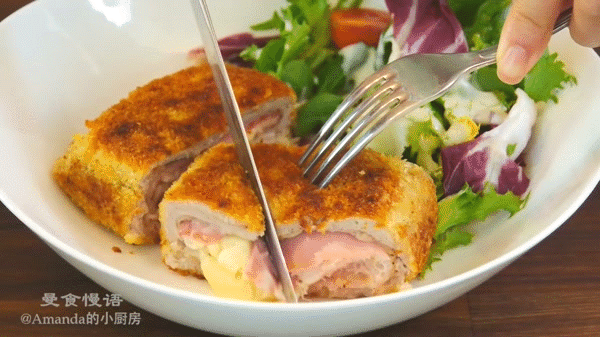

Odins most favorite!
Here is a simple recipe for the Chicken Cordon Bleu
Make sure to following the cooking instructions in the order that follows
------------------------------------------------------

Spread panko breadcrumbs on a baking tray and spray with oil.
Bake for 3 minutes or until light golden.
Remove and scrape into bowl straight away.
Fold the cheese in half and place 2 pieces inside each pocket.
Do the same with the ham. Close the pocket, seal with 2 toothpicks.
Sprinkle with salt and pepper.
Mix the mayonnaise, mustard, salt and pepper in a bowl.
Spread onto the top and sides of the chicken (not underside).
Bake for 25 to 30 minutes, or until golden brown and just cooked through.
Remove toothpicks, serve with the Dijon Cream Sauce.